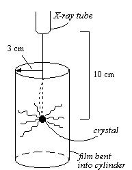

Notes on X-ray Crystallography
From J.W. Jeffery, Methods in X-Ray Crystallography , (London: Academic Press), 1971 p. 3
Grating law: n λ = d sin ψ
The finer the grating (the smaller is d ), the smaller the wavelength that is necessary to observe (resolve) it, since the angle ψ becomes larger.
When d = λ, the deviation ψ is 90° and, in fact, no image is observed. For d < λ, no angle is definable as well.
Why are electron microscopes not used for viewing crystal structures, since atomic distances are on the order of 1 Å (0.1 nm) and the wavelength of the electrons is less than that? Because resolution is not only a function of wavelength (λ), but also of numerical aperture (N.A.), which is a function of the angle between two points to be resolved and the angle of waves from the source. For electron microscropes, N.A. is too small. 
The x-ray tube used to generate the rays necessary uses a power of 1 kilowatt (kW) generally, with 99% of it given off as heat and 0.1% as useable x-ray photons. The physical dimensions of the apparatus and the crystal in relation to the exposed film is shown in the figure at left.
Determination of the scattered intensity from the object (electron) irradiated by the primary beam is as follow:
| Object = Electron |
A
2
= intensity of monochromatic beam
I
A = absolute amplitude |
||||||
| Thomson formula: | the amplitude of radiation from a distance of 30 mm (3 cm dia.), | ||||||
| a |
=
=
≈ A × 10 –12 |
||||||
and,
a 2 = ( A × 10 –13 ) 2 = 1.4 × 10 -5 • 10 –26 = 1.4 × 10 -31 J mm –2 s –1
Energy of a photon for CuKα radiation, with a λ = 1.54 Å:
The flux of quanta obtained from one electron is determined as:
If the object is a gas at STP, having V = 1 mm 3 and containing 3 × 10 16 molecules, the flux of quanta would be 1.1 × 10 –14 • 3 × 10 16 = 300 mm –2 s –1 (note that the first factor is the quantum from one molecule). Some useful relationships might be deduced, but only a spherically symmetrical averaged molecule can be observed as a pattern.
If the object is a liquid (or glass ), the scattering will be more intense. Why? Because the density of electrons is greater and random.
Suppose the object is a cubic crystal with a side of length 0.1 mm (10 6 Å) and a unit cell edge length of 10 �. � The following parameters are evaluated, with the total number of unit cells ( N ) being (10 6 Å / 10 Å) 3 = 10 15 unit cells
The equation shows that the scattered beam has an intensity 1 million times greater than the incident beam!
Suppose the object is a crystal with same unit side length but that the overall crystal size is 1000 times smaller (with edge = 0.1 μm). Hence N = 10 6 unit cells. The scattered flux can then be evaluated to be 1.1 × 10 –2 quanta mm –2 s -1 , showing that the bigger the crystal, the better the information.
The figure illustrates an important theory.

| Phase difference (Δ): | phase change per unit time = 2πν |
| phase change per unit distance = 2π/λ | |
| difference in phase between two fronts = 2π x /λ |
Therefore in the above illustration: φ a — φ b = 2π ( l a — l b ) / λ
φ
m
= 2π(
x
s
— x
i
)/λ
x
s
=
r
m
•
s
; (
s
is a unit vector)
x
i
= –
r
m
• –
i
=
r
m
•
i
x
s
–
x
i
=
r
m
• (
s
–
i
) =
r
m
•
n
(2 sin θ)
Notes from
G. H. W. Milburn,
X-Ray Crystallography: An Introduction to
...
Crystals act as a 3-D diffraction grating.
Crystal lattices are mapped with Miller indices: a/h, b/k, c/l (see figures)
Miller indices =
| parametral plane |
| plane intercepts |
interplane spacing = d 130
It follows that:
| Crystal system | axial relations | angular relations |
|---|---|---|
| cubic | a = b = c | α = β = γ = 90° |
| monoclinic | a ≠ b ≠ c | α = γ = 90° ≠ β |
| triclinic | a ≠ b ≠ c | α ≠ β ≠ γ ≠ 90 ° |
| orthorhombic | a ≠ b ≠ c | α = β = γ = 90° |
| tetragonal | a = b ≠ c | α = β = γ = 90° |
| hexagonal | a = b ≠ c | α = β = 90° γ = 120° |
trigonal
|
a = b = c a = b ≠ c |
α = β = γ ≠ 90°,<120° α = β = 90° γ = 120° |
| Crystal system | Possible lattices | Lattice Symbol | Lattice Points |
|---|---|---|---|
| triclinic | P | P = primitive | at corners |
| monoclinic | P, C | I = inner | at corners and center of cell |
| orthorhombic | P, C, F, I | A = centered on 2 faces | at corners and A-face centers |
| tetragonal | P, I | B = centered on 2 faces | at corners and B-face centers |
| hexagonal | P | C = centered on 2 faces | at corners and C-face centers |
| cubic | P, F, I | F = centered on all faces | at corners and all face centers |
| rhombohedral | R | R = rhombohedral | at corners |
Abbe Hauy (1784) theorizes that the way a crystal cleaves indicates a microscopic arrangement of atoms
Carangeot (1780) develops the contact goniometer to find precise measurements of interfacial angles. The Law of Constancy of Angle is subseq found: different crystals of the same substance have corresponding interfacial angles.
Glide plane operations combine reflection across a plane with translation parallel to the plane. The distance of translation equals a certain fraction of translation that produces line lattice translation.
Screw axis combines rotation about 2-, 3-, 4- or 6-fold axis with translation in direction of the axis. The translation distance = multiples of 1/2, 1/3, 1/4, of 1/6 of the line lattice translation. A two-fold screw axis would be represented as 2 1 and would result in rotation about a two-fold axis and translatio by 1/2 the repeat distance of the axis.
C222 1 is the space group symbol describing a C-face centered unit cell with 2-fold rotation axes in the a and b directions, and a two-fold screw axis along the C axis.
The first approach is to use any point in the crystal lattice (real lattice) as an origin, and then draw perpendicular lines to all sets of real lattice planes. Note the axes of the real and reciprocal lattices for a monoclinic crystal superimposed on each other:
Note that in the triclinic crystal, there is only one possibility that the real and reciprocal lattices are collinear.
Cell relationships are mathematically described as follows:
| (1) | a = | b * c * sin α * | b = | a * c * sin β * | c = | a * b * sin β * | |||
| V * | V * | V * |
| (2) | V = abc | ( | 1 – cos 2 α – cos 2 β – cos 2 γ + 2 cos α cos β cos γ | ) ½ | ||||||
| (3) | V = 1 / V * |
| (4) | cos α = cos β * cos γ * – | cos α * | |
| sin β * sin γ * |
Note that the basic relationship between real and reciprocal lattice unit cell lengths is implicit in the the definition of the reciprocal lattice:
| a * = K / d 100 | b * = K / d 010 | c * = K / d 001 |
| ρ( x , y , z ) = | Σ | Σ | Σ | C h´k´l´ e 2π i ( h´x + k´y + l´z ) |
| h ´ | k ´ | l ´ |
The quantity F hkl is called the structure factor , and is related as a resultant vector of j waves which are scattered in the direction of the hkl reflection by j atoms. In the case where the sum of wavelets scattered by all electron elements in the unit cell without regard to distribution of density, the structure factor is:
| F hkl = | ∫ | ∫ | ∫ | ρ( x , y , z ) e 2π i ( hx + ky + lz ) |